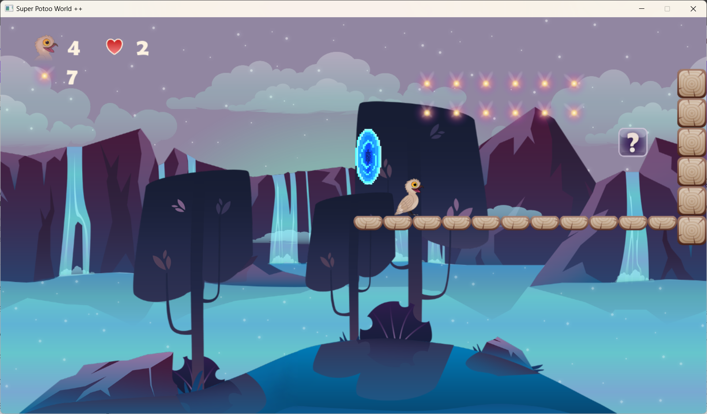
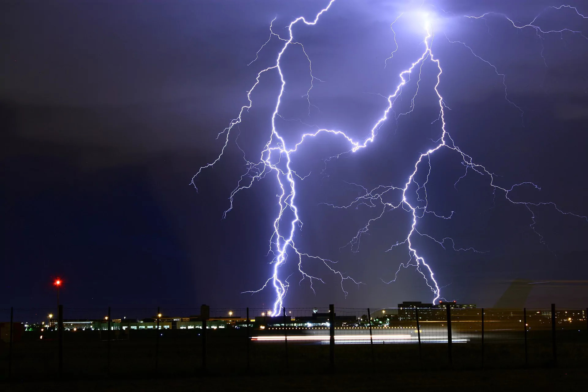

Super Potoo World
Un jeu de plateforme codé en C sur visual studio.
Projet de formation humainre
Escape game informatique pour des classes de lycéens en spécialité NSI.
Projet en électronique
Création d'une horloge électronique avec alarme, compteur, décompteur et chronomètre.

Projet scientifique et technique
Création d'un détecteur de foudre pour appareil photo à partir des ondes lumineuses.